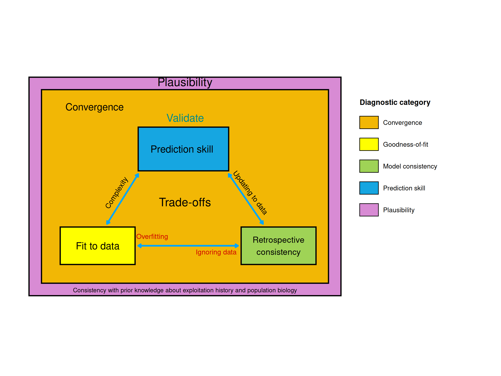

Diagnostics and model validation
Convergence, fit, consistency, prediction skill and plausibility
Model acceptance checklist
Every assessment that informs advice should be evaluated on four properties, convergence, fit to the data, model consistency and prediction skill (Carvalho et al., 2021), plus plausibility. For surplus production models, Kokkalis et al. (2024) set these out as a seven-point checklist. No criterion is used in isolation; together they support accepting a model, rejecting it, or keeping it as a sensitivity run.
| # | Check | What to look at | Rule of thumb or red flag |
|---|---|---|---|
| 1 | Convergence | Optimiser status, finite parameters and variances (ML); Rhat, ESS and trace plots (MCMC) | Non-finite estimates or failed convergence: revisit data and assumptions, not just settings |
| 2 | Residuals | One-step-ahead residuals (TMB, e.g. SPiCT) or “one sample from the posterior” residuals (MCMC, e.g. JABBA); runs test; three-sigma outliers; joint residual plot | Failed runs test; points beyond three sigma; trends in residuals. RMSE ≤ 0.3 suggests a reasonably precise index fit, but RMSE is not for model selection on its own |
| 3 | Prior vs posterior | Overlap of prior and posterior for key parameters | Posterior identical to the prior: no information in the data; run prior sensitivities, especially if the prior SD was arbitrary |
| 4 | Retrospective analysis | Peels of B/BMSY and F/FMSY (or SSB, F); Mohn’s ρ | Peels outside the base-run interval; ρ outside −0.15 to 0.20 (longer-lived) or −0.22 to 0.30 (shorter-lived) (Hurtado-Ferro et al., 2015) |
| 5 | Hindcast cross-validation | Prediction of withheld index observations; MASE | MASE > 1: the model predicts worse than a naive “same as last year” forecast |
| 6 | Jitter analysis | Estimates from a range of starting values | Different optima: local minima; ensure the global optimum |
| 7 | Plausibility | Parameters and status consistent with the biology and exploitation history; size of uncertainty | 95% intervals of B/BMSY or F/FMSY spanning more than an order of magnitude: likely too uncertain for advice; very skewed production curves (BMSY/K < 0.5) need extra scrutiny |
For integrated models, Carvalho et al. (2021) add likelihood profiles (e.g. on R0) to reveal conflicts between data sources and the ASPM diagnostic to check whether catches and indices alone carry the production signal.
Good practice for surplus production models (Kokkalis et al., 2024)
- Data: at least about 15 years of data with contrast to estimate all parameters; index observations assigned to their correct timing; uncertainty scaling of catches and indices stated.
- Priors: from auxiliary information, not convenience; restrictive priors only when justified, always with sensitivity runs.
- Shape: avoid very skewed production curves; prefer \(n > 1\), in line with a more precautionary approach.
- Reference points: use stochastic reference points in state-space models when \(n > 1\).
- Model choice: information criteria only between models fitted to the same data (including priors); otherwise the most precautionary model, a set of base cases, or an ensemble.
Why diagnostics matter
Modern SPM workflows should not stop at a base-case fit. A model can fit the observed CPUE but still provide poor advice if the fit is achieved through overfitting, implausible process error, unsuitable priors, or unrecognized data conflicts.
The diagnostic framework should evaluate four broad properties:
- Convergence: did the optimizer or MCMC estimation behave adequately?
- Fit to data: are residuals acceptable and broadly random?
- Model consistency: are estimates stable under retrospective peels?
- Prediction skill: can the model predict withheld observations?
- Plausibility: does the model predict a realistic biological state that is consistent with the exploitation history?
Modern diagnostics should therefore not focus solely on goodness-of-fit. Contemporary assessment frameworks increasingly evaluate models according to multiple complementary dimensions.
A useful conceptual framework is shown below.
Residual diagnostics
Residual diagnostics evaluate whether the fitted model systematically over- or under-predicts observations.
For CPUE or survey indices, the guide should include:
- residual plots by index;
- joint residual plots across indices;
- RMSE summaries;
- runs tests for non-random residual sequences;
- outlier checks;
- comparison of residual patterns across model scenarios.
A good fit to residuals is necessary but not sufficient. Residuals can improve when extra parameters are added, even if prediction skill deteriorates.
Retrospective analysis
Retrospective analysis evaluates the stability of model-derived quantities as recent years of data are sequentially removed. It is useful for identifying systematic changes in estimates of stock status or fishing mortality when new data are added.
However, retrospective analysis uses latent model quantities such as biomass or fishing mortality. These quantities are not observed directly. Therefore, retrospective stability alone is not validation.
In the guide, retrospective analysis should be interpreted as a model-consistency diagnostic, not as the final model-acceptance test.
Hindcast cross-validation
Hindcast cross-validation evaluates prediction skill by withholding observations from the terminal period, fitting the model to the truncated dataset, and comparing model predictions to the withheld observations.
This is critical because it evaluates the model against observations that were not used for fitting.
The basic workflow is:
- remove the most recent observation from one or more CPUE/index series;
- refit the model;
- predict the withheld observation;
- compare predicted and observed values;
- repeat for multiple peels and prediction horizons;
- summarize prediction residuals and prediction skill.
This can be applied to CPUE, survey indices and, where relevant, empirical composition summaries such as mean length or mean age.
MASE metric: mean absolute scaled error
A practical prediction-skill metric is the mean absolute scaled error (MASE). It compares the model prediction error to a naïve baseline forecast, typically the previous observation.
Interpretation:
- \(MASE < 1\): the model predicts better than the naïve baseline;
- \(MASE = 1\): the model predicts about as well as the naïve baseline;
- \(MASE > 1\): the model predicts worse than the naïve baseline;
- \(MASE = 0.5\): the model is approximately twice as accurate as the naïve baseline.
This makes MASE useful because it is interpretable and can be compared across indices with different scales.
For each SPiCT and JABBA case study, the following diagnostic sequence is recommended:
| Step | Purpose | Key_outputs |
|---|---|---|
| 1. Convergence | Check whether estimation succeeded | Optimizer status, gradients, Hessian; or MCMC Rhat/ESS/trace plots |
| 2. Residual diagnostics | Evaluate fit to CPUE/index data and residual randomness | Residual plots, RMSE, runs tests |
| 3. Production-function interpretation | Assess whether the data support a plausible production curve and MSY reference points | Production curve, B trajectory on curve, MSY point |
| 4. Retrospective analysis | Evaluate stability of latent model quantities under data peels | Retrospective biomass and F/harvest plots, Mohn’s rho |
| 5. Hindcast cross-validation | Evaluate prediction skill against withheld observations | Prediction residuals, MASE, hindcast plots |
| 6. Sensitivity analysis | Evaluate robustness to priors, process error, initial depletion, catch and CPUE assumptions | Sensitivity tables and comparative figures |
| 7. Plausibility review | Assess consistency with biology, exploitation history and expert knowledge | Narrative decision on acceptance, rejection or use as sensitivity |